k-Day 019｜新的規則
與日本不同，對於即將要面對的道路完全未知，有著新鮮的眼睛似乎不錯。
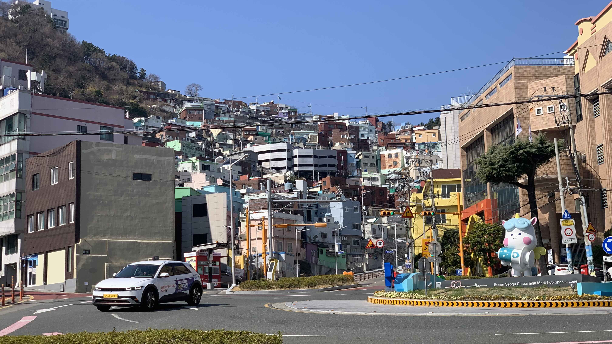
開始的時候是朝著山坡上的小積木城市走，整體來說很有電玩感。
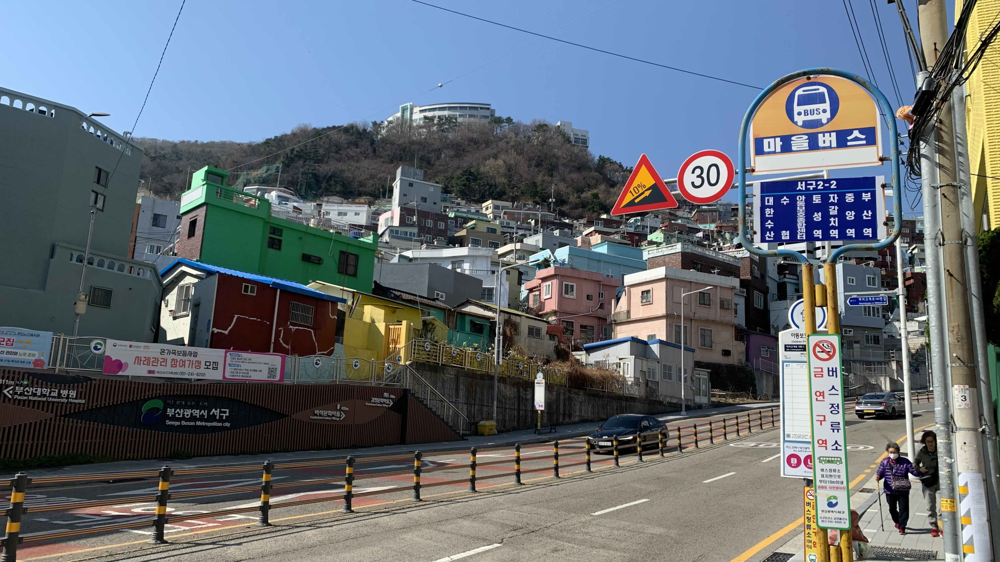
邊騎邊拍，是個白色很白，藍色很藍，色彩分明的國家。
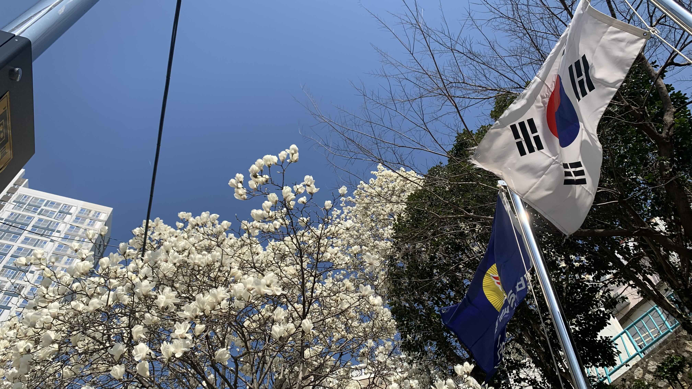
沒多久就發現異狀，說好的車道呢？
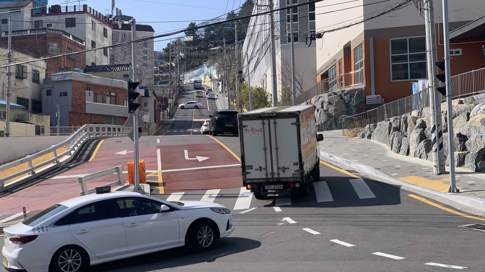
這上坡是怎麼回事？連汽車都快滑下來了。
顯然是我抄了所謂的近路，積木城市是一路往上的超級大斜坡，因此一開局就推著35公斤的車和行李不斷喘氣，花了好一番功伕爬上頂點。
當做暖身也是不錯的運動，還能參觀這種前所未聞的斜坡實在相當值得。
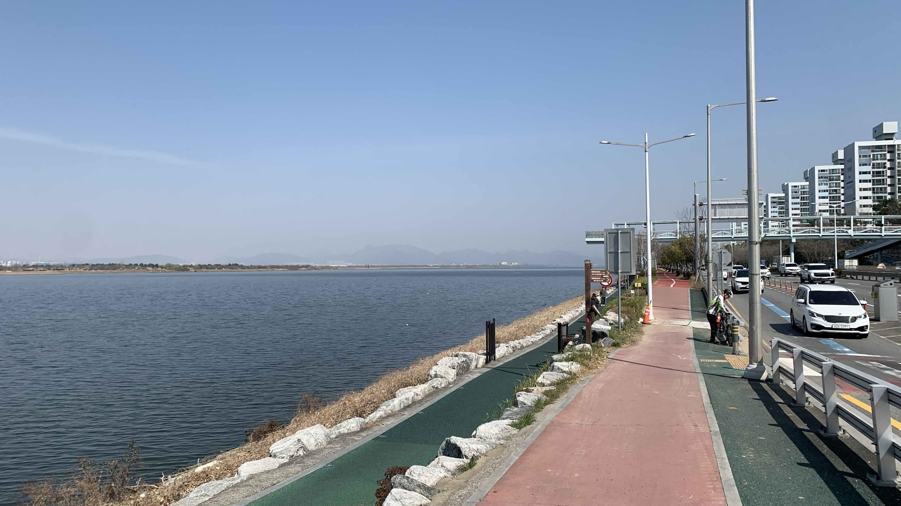
從頂點往下滑，又回到河岸邊。
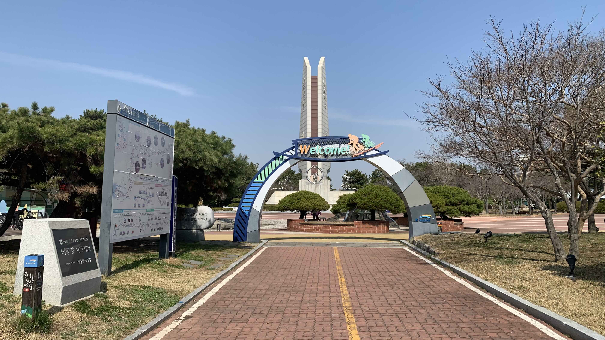
沿著車道騎到國土縱貫的起點，乙淑島上的洛東江認證中心。
這地方打造的像是新手村一樣，有各種地圖和實用資訊，飲水、廁所、打氣、休息區，甚至連洗腳設施都有！本來對蓋章活動沒啥興趣的，被誠意打動往建築方向走，想買一本手冊作為支持，結果沒開門。免費的東西這麼齊全，需要購買的產品卻找不到，這邏輯不對呀。
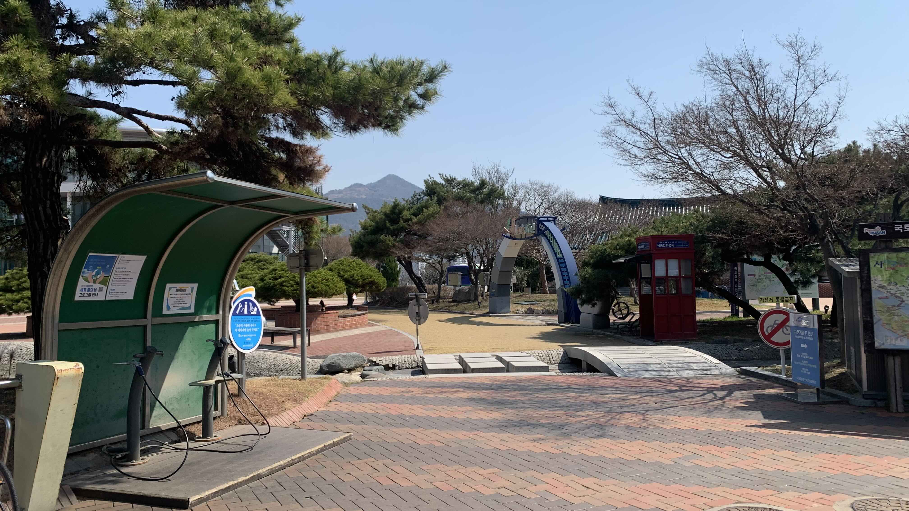
肉眼可見的誠意。
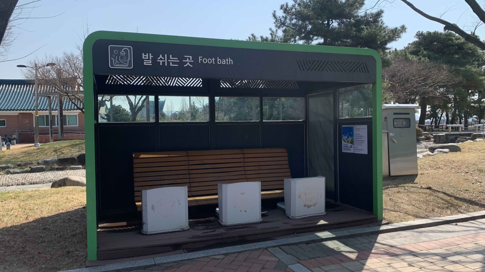
這是被感動的洗腳區。
買不到認證本，參觀一下認證亭。聽說是沿著路線騎，蓋滿章就可以獲得一個證書。
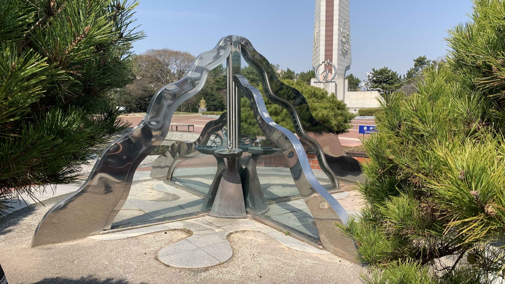
免費的飲水。和先前預期的完全不同，我以為所謂認證中心就像是日本的道の駅一樣，有各種當地特產，餐廳飲料等消費項目。錢包都掏出來了，所有東西都免費，想投幣買個販賣機咖啡的機會都不給。
既然如此只好乖乖出發。
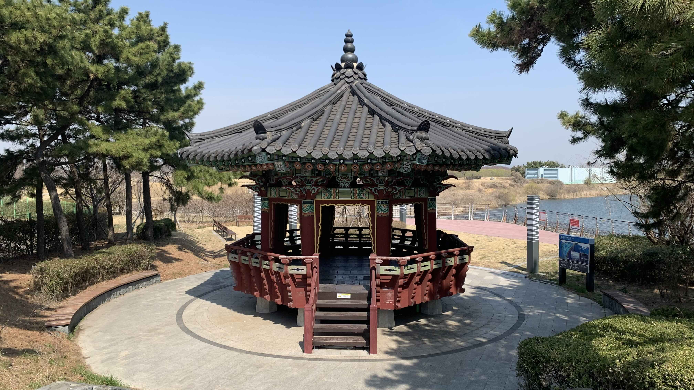
沒走多遠就出現傳說中的路邊涼亭，每個一段距離就有這樣的休憩區，可以在此休息午餐，甚至聽說只要不太張揚並保持乾淨，是可以在此過夜的。

從進入正確車道開始，兩旁就是這些櫻花樹。大部分都還沒開花，但可以想像一兩週後滿開的盛況。

車道逐漸走到高處，視野變得開闊，這河面那麼廣，難道韓國是個國土很大的國家？

下方紅色延伸到盡頭的就是自行車道，河的兩岸都有。

經過橋下，看到很像八里河邊會有的攤車，因此停下來買午餐。本想循例買個美式熱狗和拿鐵，老闆說沒有，要我吃香腸年糕，並推薦我沾了辣醬。年糕試烤過的，表層很薄的脆度，裡面保留了米的香氣、甜味和黏性，香腸不是粗絞肉，更像是熱狗的口感，調味清淡。辣醬沒有想像中的辣，而且帶點甜味，應該多加一點比較有滋味。
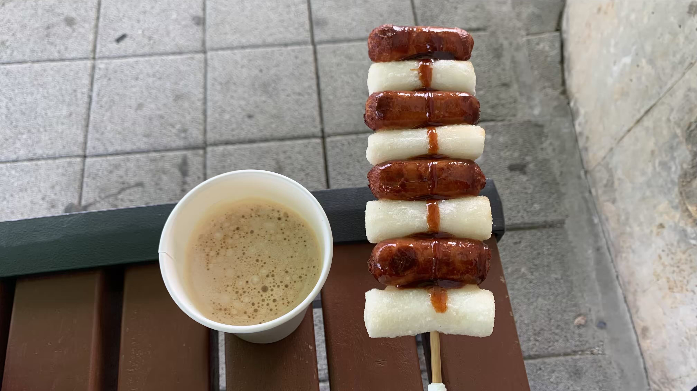
吃飽後順便上個廁所，準備推車出發的時候有個阿嬤走近我，用眼神指了二十三號前方睡袋帳篷的方向，點了點頭，並說了幾句話。實在聽不懂，我重複了一次她的發音。阿嬤讚許地伸手拍了拍前方的睡袋，眼神透露出肯定，又說了一句更長的話。還是聽不懂，我再次重複了這句話的最後幾個音節。阿嬤點頭後笑著拉開廁所的門，走了進去。
我想像這整段對話是這樣的： 「帶著睡袋旅行很好，這是睡袋吧。」 「這是睡袋。」 得到答案後，阿嬤拍了拍睡袋，說：「這樣很好，年輕人就是要這樣旅行。」 「就是要這樣旅行。」我重複。 阿嬤滿意地拉開廁所的門走了進去。

又到了新的認證亭，因為沒有蓋章本，就拍張照片。

其實一直到這時候，我還在等這個車道中斷，突然畫個指標要我往汽車道路上走。結果不但一整天都騎在專屬車道上，連遇到這種無法開路的地方，都架上這種道路。太有誠意了啊，這個國家！

離開水面後，又回到堤防上的櫻花車道。其實從河的這一邊也可以看到對岸的櫻花延伸到河面轉彎的盡頭，相當壯觀。

是錯覺嗎？從白天看到的花就覺得特別白，天空特別藍。
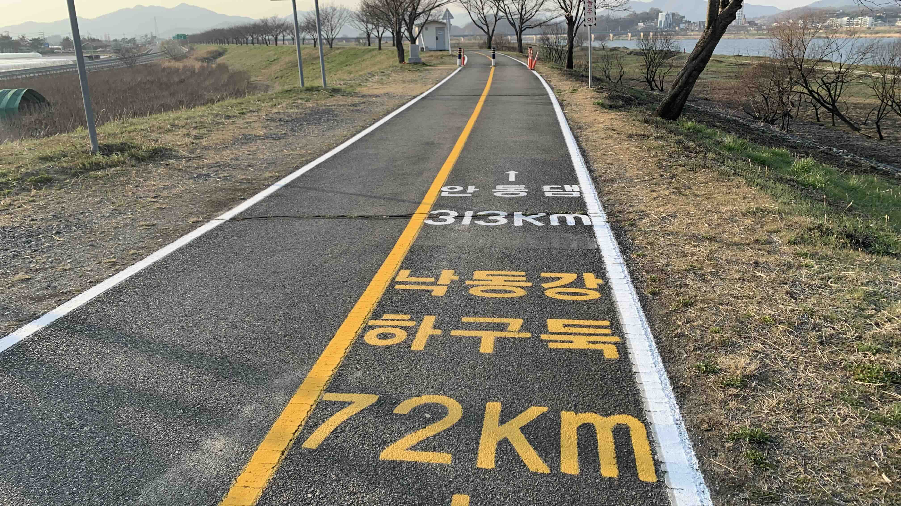
自行車道上會有這樣的指示，再說一次真的很像遊戲畫面。

騎著騎著，太陽快掉到山後面了。但是在這種完善的車道上，完全沒有緊張擔心的感覺。

找了一個很像台灣河邊會有的休息座位，旁邊就是廁所，準備在這裡扎營。圓形涼亭上已經有一對比利時女性坐在上面了，應該也是要住在這裡的。在天黑到足夠搭帳篷已前聊了一下，他們是特地到韓國騎這條國土縱貫路線的，而且準備的資訊顯然比我充足許多。

天黑後立好帳篷，看著天空，回想一下經過卻沒有拍下的印象。

遠山是綿延狀的層層疊疊的青色漸層，軟軟的邊緣好像長了絨毛。夕陽下的柳樹很美，天空是淡粉色、淡藍色的，一切都粉粉地。
今日花費： 熱狗年糕+拿鐵 7500